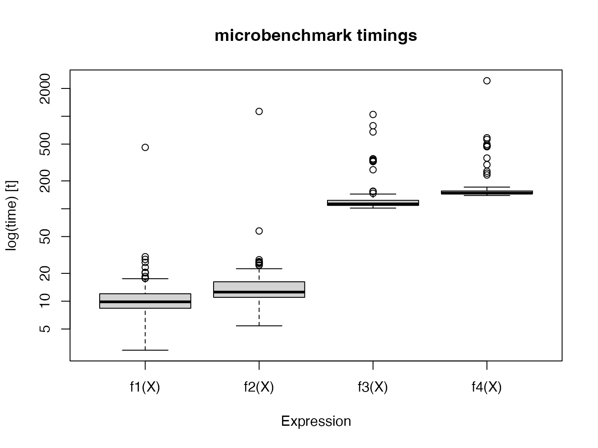
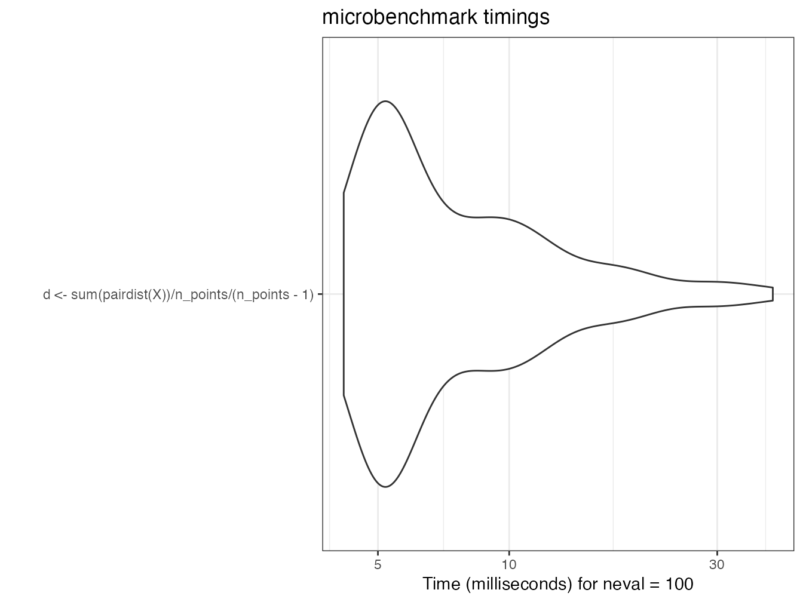
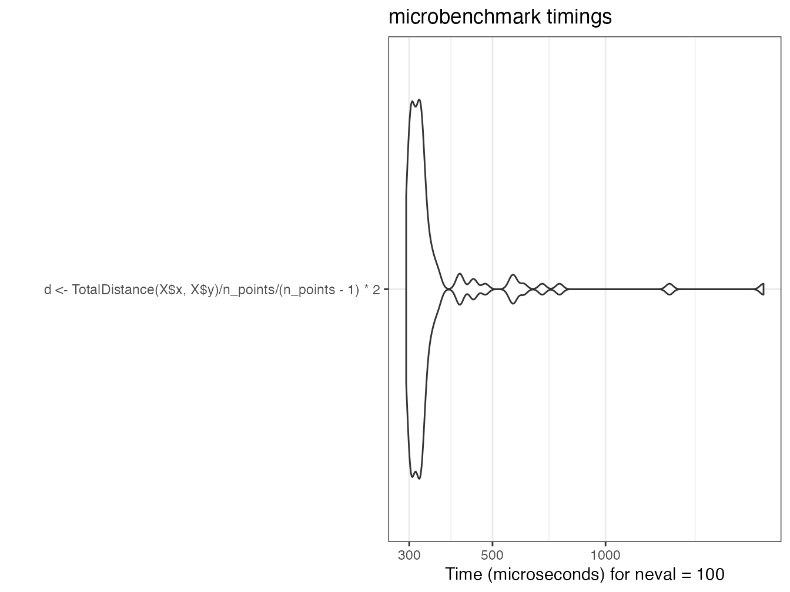

2 Use R
The literature devoted to learning R is flourishing. The following books are an arbitrary selection but useful for progress:
- R for Data Science (Wickham and Grolemund 2016) presents a complete working method, consistent with the tidyverse.
- Advanced R (Wickham 2014) is the reference for mastering the subtleties of the language and understanding how R works.
- Finally, Efficient R programming (Gillespie and Lovelace 2016) deals with code optimization.
Some advanced aspects of coding are seen here. Details on the different languages of R are useful for creating packages. The environments are presented next, for the proper understanding of the search for objects called by the code. Finally, the optimization of code performance is discussed in detail (loops, C++ code and parallelization) and illustrated by a case study.
2.1 The languages of R
R includes several programming languages. The most common is S3, but it is not the only one17.
2.1.1 Base
The core of R is the primitive functions and basic data structures like the sum function and matrix data:
pryr::otype(sum)## [1] "base"typeof(sum)## [1] "builtin"pryr::otype(matrix(1))## [1] "base"typeof(matrix(1))## [1] "double"The pryr package allows to display the language in which objects are defined.
The typeof() function displays the internal storage type of the objects:
sum()function belongs to the basic language of R and is a builtin function;- the elements of the numerical matrix containing a single 1 are double precision reals, and the matrix itself is defined in the basic language.
Primitive functions are coded in C and are very fast. They are always available, whatever the packages loaded. Their use is therefore to be preferred.
2.1.2 S3
S3 is the most used language, often the only one known by R users.
It is an object-oriented language in which classes, i.e. the type of objects, are declarative.
MyFirstName <- "Eric"
class(MyFirstName) <- "FirstName"The variable MyFirstName is here classed as FirstName by a simple declaration.
Unlike the way a classical object-oriented language works18, S3 methods are related to functions, not objects.
# Default display
MyFirstName## [1] "Eric"
## attr(,"class")
## [1] "FirstName"print.Firstname <- function(x) cat("The first name is", x)
# Modified display
MyFirstName## [1] "Eric"
## attr(,"class")
## [1] "FirstName"In this example, the print() method applied to the “Firstname” class is modified.
In a classical object-oriented language, the method would be defined in the class Firstname.
In R, methods are defined from generic methods.
print` is a generic method (“a generic”) declared in base.
pryr::otype(print)## [1] "base"Its code is just a UseMethod("print") declaration:
print## function (x, ...)
## UseMethod("print")
## <bytecode: 0x7ff5a19c7678>
## <environment: namespace:base>There are many S3 methods for print:
head(methods("print"))## [1] "print.acf" "print.AES" "print.all_vars"
## [4] "print.anova" "print.any_vars" "print.aov"Each applies to a class. print.default is used as a last resort and relies on the type of the object, not its S3 class.
typeof(MyFirstName)## [1] "character"pryr::otype(MyFirstName)## [1] "S3"An object can belong to several classes, which allows a form of inheritance of methods. In a classical object oriented language, inheritance allows to define more precise classes (“FrenchFirstName”) which inherit from more general classes (“Prenom”) and thus benefit from their methods without having to redefine them. In R, inheritance is simply declaring a vector of increasingly broad classes for an object:
# Definition of classes by a vector
class(MyFirstName) <- c("FrenchFirstName", "FirstName")
# Alternative code, with inherits()
inherits(MyFirstName, what = "FrenchFirstName")## [1] TRUEinherits(MyFirstName, what = "FirstName")## [1] TRUEThe generic looks for a method for each class, in the order of their declaration.
print.FrenchFirstName <- function(x) cat("French first name:",
x)
MyFirstName## French first name: EricIn summary, S3 is the common language of R. Almost all packages are written in S3. Generics are everywhere but go unnoticed, for example in packages:
library("entropart")
.S3methods(class = "SpeciesDistribution")## [1] autoplot plot
## see '?methods' for accessing help and source codeThe .S3methods() function displays all available methods for a class, as opposed to methods() which displays all classes for which the method passed as an argument is defined.
Many primitive functions in R are generic methods.
To find out about them, use the help(InternalMethods) helper.
2.1.3 S4
S4 is an evolution of S3 that structures classes to get closer to a classical object oriented language:
- classes must be explicitly defined, not simply declared;
- attributes (i.e. variables describing objects), called slots, are explicitly declared;
- the constructor, i.e. the method that creates a new instance of a class (i.e. a variable containing an object of the class), is explicit.
Using the previous example, the S4 syntax is as follows:
# Definition of the class Person, with its slots
setClass("Person",
slots = list(LastName = "character", FirstName = "character"))
# Construction of an instance
Me <- new("Person", LastName = "Marcon", FirstName = "Eric")
# Langage
pryr::otype(Me)## [1] "S4"Methods always belong to functions.
They are declared by the setMethod() function:
setMethod("print", signature = "Person", function(x, ...) {
cat("The person is:", x@FirstName, x@LastName)
})
print(Me)## The person is: Eric MarconThe attributes are called by the syntax variable@slot.
In summary, S4 is more rigorous than S3. Some packages on CRAN : Matrix, sp, odbc… and many on Bioconductor are written in S4 but the language is now clearly abandoned in favor of S3, notably because of the success of the tidyverse.
2.1.4 RC
RC was introduced in R 2.12 (2010) with the methods package.
Methods belong to classes, as in C++: they are declared in the class and called from the objects.
library("methods")
# Declaration of the class
PersonRC <- setRefClass("PersonRC",
fields = list(LastName = "character", FirstName = "character"),
methods = list(print = function() cat(FirstName, LastName)))
# Constructeur
MeRC <- new("PersonRC", LastName = "Marcon", FirstName ="Eric")
# Language
pryr::otype(MeRC)## [1] "RC"# Call the print method
MeRC$print()## Eric MarconRC is a confidential language, although it is the first “true” object-oriented language of R.
2.1.5 S6
S619 enhances RC but is not included in R: it requires installing its package.
Attributes and methods can be public or private.
An initialize() method is used as a constructor.
library(R6)
PersonR6 <- R6Class("PersonR6", public = list(LastName = "character",
FirstName = "character", initialize = function(LastName = NA,
FirstName = NA) {
self$LastName <- LastName
self$FirstName <- FirstName
}, print = function() cat(self$FirstName, self$LastName)))
MeR6 <- PersonR6$new(LastName = "Marcon", FirstName = "Eric")
MeR6$print()## Eric MarconS6 allows to program rigorously in object but is very little used. The performances of S6 are much better than those of RC but are inferior to those of S320.
The non-inclusion of R6 to R is shown by pryr:
pryr::otype(MeR6)## [1] "S3"2.1.6 Tidyverse
The tidyverse is a set of coherent packages that have evolved the way R is programmed. The set of essential packages can be loaded by the tidyverse package which has no other use:
library("tidyverse")This is not a new language per se but rather an extension of S3, with deep technical modifications, notably the unconventional evaluation of expressions21, which it is not essential to master in detail.
Its principles are written in a manifesto22. Its most visible contribution for the user is the sequence of commands in a flow (code pipeline).
In standard programming, the sequence of functions is written by successive nesting, which makes it difficult to read, especially when arguments are needed:
# Base-2 logarithm of the mean of 100 random numbers in a
# uniform distribution
log(mean(runif(100)), base = 2)## [1] -1.127903In the tidyverse, the functions are chained together, which often better matches the programmer’s thinking about data processing:
# 100 random numbers in a uniform distribution
runif(100) %>%
# Mean
mean %>%
# Base-2 logarithm
log(base=2)## [1] -0.9772102The pipe %>% is an operator that calls the next function by passing it as first argument the result of the previous function.
Additional arguments are passed normally: for the readability of the code, it is essential to name them.
Most of the R functions can be used without difficulty in the tidyverse, even though they were not designed for this purpose: it is sufficient that their first argument is the data to be processed.
The pipeline allows only one value to be passed to the next function, which prohibits multidimensional functions, such as f(x,y).
The preferred data structure is the tibble, which is an improved dataframe: its print() method is more readable, and it corrects some unintuitive dataframe behavior, such as the automatic conversion of single-column dataframes to vectors.
The columns of the dataframe or tibble allow to pass as much data as needed.
Finally, data visualization is supported by ggplot2 which relies on a theoretically sound graph grammar (Wickham 2010). Schematically, a graph is constructed according to the following model:
ggplot(data = <DATA>) +
<GEOM_FUNCTION>(
mapping = aes(<MAPPINGS>),
stat = <STAT>,
position = <POSITION>
) +
<COORDINATE_FUNCTION> +
<FACET_FUNCTION>- the data is necessarily a dataframe;
- the geometry is the type of graph chosen (points, lines, histograms or other);
- the aesthetics (function
aes()) designates what is represented: it is the correspondence between the columns of the dataframe and the elements necessary for the geometry; - statistics is the treatment applied to the data before passing it to the geometry (often “identity”, i.e. no transformation but “boxplot” for a moustache box).
The data can be transformed by a scale function, such as
scale_y_log10(); - the position is the location of the objects on the graph (often “identity”; “stack” for a stacked histogram, “jitter” to move the overlapping points slightly in a
geom_point); - the coordinates define the display of the graph (
coord_fixed()to avoid distorting a map for example); - finally, the facets offer the possibility to display several aspects of the same data by producing one graph per modality of a variable.
The set formed by the pipeline and ggplot2 allows complex processing in a readable code. Figure 2.1 shows the result of the following code:
# Diamonds data provided by ggplot2
diamonds %>%
# Keep only diamonds larger than half a carat
filter(carat > 0.5) %>%
# Graph: price vs. weight
ggplot(aes(x = carat, y = price)) +
# Scatter plot
geom_point() +
# Logarithmic scale
scale_x_log10() +
scale_y_log10() +
# Linear regression
geom_smooth(method = "lm")Figure 2.1: Price of diamonds according to their weight. Demonstration of the ggplot2 code combined with tidyverse data processing.
In this figure, two geometries (scatterplot and linear regression) share the same aesthetics (price vs. carat weight) which is therefore declared upstream, in the ggplot() function.
The tidyverse is documented in detail in Wickham and Grolemund (2016) and ggplot2 in Wickham (2017).
2.2 Environments
R’s objects, data and functions, are named. Since R is modular, with the ability to add any number of packages to it, it is very likely that name conflicts will arise. To deal with them, R has a rigorous system of name precedence: code runs in a defined environment, inheriting from parent environments.
2.2.1 Organization
R starts in an empty environment. Each loaded package creates a child environment to form a stack of environments, of which each new element is called a “child” of the previous one, which is its “parent”.
The console is in the global environment, the child of the last loaded package.
search()## [1] ".GlobalEnv" "package:R6"
## [3] "package:entropart" "package:forcats"
## [5] "package:stringr" "package:dplyr"
## [7] "package:purrr" "package:readr"
## [9] "package:tidyr" "package:tibble"
## [11] "package:ggplot2" "package:tidyverse"
## [13] "package:kableExtra" "package:stats"
## [15] "package:graphics" "package:grDevices"
## [17] "package:utils" "package:datasets"
## [19] "package:methods" "Autoloads"
## [21] "package:base"The code of a function called from the console runs in a child environment of the global environment:
# Current environment
environment()## <environment: R_GlobalEnv># The function f displays its environment
f <- function() environment()
# Display the environment of the function
f()## <environment: 0x7ff5afa46b58># Parent environment of the function's environment
parent.env(f())## <environment: R_GlobalEnv>2.2.2 Search
The search for objects starts in the local environment. If it is not found, it is searched in the parent environment, then in the parent of the parent, until the environments are exhausted which generates an error indicating that the object was not found.
Example:
# Variable q defined in the global environment
q <- "GlobalEnv"
# Function defining q in its environment
qLocalFunction <- function() {
q <- "Function"
return(q)
}
# The local variable is returned
qLocalFunction()## [1] "Function"# Function (poorly written) using a variable it does not
# define
qGlobalEnv <- function() {
return(q)
}
# The global environment variable is returned
qGlobalEnv()## [1] "GlobalEnv"# Delete this variable
rm(q)
# The function base::q is returned
qGlobalEnv()## function (save = "default", status = 0, runLast = TRUE)
## .Internal(quit(save, status, runLast))
## <bytecode: 0x7ff5b0ab4710>
## <environment: namespace:base>The variable q is defined in the global environment.
The function qLocalFunction defines its own variable q.
The function call returns the function’s local value because it is in the function’s environment.
The qGlobalEnv function returns the q variable that it does not define locally.
So it looks for it in its parent environment and finds the variable defined in the global environment.
By removing the variable from the global environment with rm(q), the qGlobalEnv() function scans the stack of environments until it finds an object named q in the base package, which is the function to exit R.
It could have found another object if a package containing a q object had been loaded.
To avoid this erratic behavior, a function should never call an object not defined in its own environment.
2.2.3 Espaces de nom des packages
Package namespaces
It is time to define precisely what packages make visible.
Packages contain objects (functions and data) which they export or not.
They are usually called by the library() function, which does two things:
- it loads the package into memory, allowing access to all its objects with the syntax
package::objectfor exported objects andpackage:::objectfor non-exported ones; - it then attaches the package, which places its environment on top of the stack.
It is possible to detach a package with the unloadNamespace() function to remove it from the environment stack.
Example:
# entropart loaded and attached
library("entropart")
# is it attached?
isNamespaceLoaded("entropart")## [1] TRUE# stack of environments
search()## [1] ".GlobalEnv" "package:R6"
## [3] "package:entropart" "package:forcats"
## [5] "package:stringr" "package:dplyr"
## [7] "package:purrr" "package:readr"
## [9] "package:tidyr" "package:tibble"
## [11] "package:ggplot2" "package:tidyverse"
## [13] "package:kableExtra" "package:stats"
## [15] "package:graphics" "package:grDevices"
## [17] "package:utils" "package:datasets"
## [19] "package:methods" "Autoloads"
## [21] "package:base"# Diversity(), a function exported by entropart is found
Diversity(1, CheckArguments = FALSE)## None
## 1# Detach and unload entropart
unloadNamespace("entropart")
# Is it attached?
isNamespaceLoaded("entropart")## [1] FALSE# Stack of environments, without entropart
search()## [1] ".GlobalEnv" "package:R6"
## [3] "package:forcats" "package:stringr"
## [5] "package:dplyr" "package:purrr"
## [7] "package:readr" "package:tidyr"
## [9] "package:tibble" "package:ggplot2"
## [11] "package:tidyverse" "package:kableExtra"
## [13] "package:stats" "package:graphics"
## [15] "package:grDevices" "package:utils"
## [17] "package:datasets" "package:methods"
## [19] "Autoloads" "package:base"# Diversity() cannot be found
tryCatch(Diversity(1), error = function(e) print(e))## <simpleError in Diversity(1): could not find function "Diversity"># but can be called with its full name
entropart::Diversity(1, CheckArguments = FALSE)## None
## 1Calling entropart::Diversity() loads the package (i.e., implicitly executes loadNamespace("entropart")) but does not attach it.
In practice, one should limit the number of attached packages to limit the risk of calling an unwanted function, homonymous to the desired function.
In critical cases, the full name of the function should be used: package::function().
A common problem is the filter() function of dplyr, which is the namesake of the stats function.
The stats package is usually loaded before dplyr, a package in the tidyverse.
Thus, stats::filter() must be called explicitly.
However, the dplyr or tidyverse package (which attaches all the tidyverse packages) can be loaded systematically by creating a .RProfile at the root of the project containing the command:
library("tidyverse")In this case, dplyr is loaded before stats so its function is inaccessible.
2.3 Measuring execution time
The execution time of long code can be measured very simply by the system.time command.
For very short execution times, it is necessary to repeat the measurement: this is the purpose of the microbenchmark package.
2.3.1 system.time
The function returns the execution time of the code.
# Mean absolute deviation of 1000 values in a uniform
# distribution, repeated 100 times
system.time(for (i in 1:100) mad(runif(1000)))## user system elapsed
## 0.02 0.00 0.022.3.2 microbenchmark
The microbenchmark package is the most advanced.
The goal is to compare the speed of computing the square of a vector (or a number) by multiplying it by itself (\(x \times x\)) or by raising it to the power of 2 (\(x^2\)).
# Functions to test
f1 <- function(x) x * x
f2 <- function(x) x^2
f3 <- function(x) x^2.1
f4 <- function(x) x^3
# Initialization
X <- rnorm(10000)
# Test
library("microbenchmark")
(mb <- microbenchmark(f1(X), f2(X), f3(X), f4(X)))## Unit: microseconds
## expr min lq mean median uq
## f1(X) 40.911 42.7485 58.29117 44.2760 46.7075
## f2(X) 48.659 50.2035 64.96233 51.7325 53.7270
## f3(X) 282.466 285.2055 308.81200 292.1070 300.1025
## f4(X) 413.217 418.0230 446.05368 430.1820 435.2425
## max neval
## 1266.303 100
## 1228.687 100
## 1457.306 100
## 1814.411 100The returned table contains the minimum, median, mean, max and first and third quartile times, as well as the number of repetitions.
The median value is to be compared.
The number of repetitions is by default 100, to be modulated (argument times) according to the complexity of the calculation.
The test result, a microbenchmark object, is a raw table of execution times.
The statistical analysis is done by the print and summary methods.
To choose the columns to display, use the following syntax:
summary(mb)[, c("expr", "median")]## expr median
## 1 f1(X) 44.2760
## 2 f2(X) 51.7325
## 3 f3(X) 292.1070
## 4 f4(X) 430.1820To make calculations on these results, we must store them in a variable.
To prevent the results from being displayed in the console, the simplest solution is to use the capture.output function by assigning its result to a variable.
dummy <- capture.output(mbs <- summary(mb))The previous test is displayed again.
summary(mb)[, c("expr", "median")]## expr median
## 1 f1(X) 44.2760
## 2 f2(X) 51.7325
## 3 f3(X) 292.1070
## 4 f4(X) 430.1820The computation time is about the same between \(x \times x\) and \(x^2\). The power calculation is much longer, especially if the power is not integer, because it requires a logarithm calculation. The computation of the power 2 is therefore optimized by R to avoid the use of log.
Two graphical representations are available: the violins represent the probability density of the execution time; the boxplots are classical.
library("ggplot2")
autoplot(mb)
boxplot(mb)
2.3.3 Profiling
profvis is RStudio’s profiling tool.
It tracks the execution time of each line of code and the memory used. The goal is to detect slow code portions that need to be improved.
library(profvis)
p <- profvis({
# Cosine calculations
cos(runif(10^7))
# 1/2 second pause
pause(1/2)
})
htmlwidgets::saveWidget(p, "docs/profile.html")The result is an HTML file containing the profiling report23. It can be observed that the time to draw the random numbers is similar to that of the cosine calculation.
Read the complete documentation24 on the RStudio website.
2.4 Loops
The most frequent case of long code to execute is loops: the same code is repeated a large number of times.
2.4.1 Vector functions
Most of R’s functions are vector functions: loops are processed internally, extremely fast. Therefore, you should think in terms of vectors rather than scalars.
# Draw two vectors of three random numbers between 0 and 1
x1 <- runif(3)
x2 <- runif(3)
# Square root of the three numbers in x1
sqrt(x1)## [1] 0.9427738 0.8665204 0.4586981# Respective sums of the three numbers of x1 and x2
x1 + x2## [1] 1.6262539 1.6881583 0.9063973We also have to write vector functions on their first argument.
The function lnq of the package entropart returns the distorted logarithm of order \(q\) of a number \(x\).
# Code of the function
entropart::lnq## function (x, q)
## {
## if (q == 1) {
## return(log(x))
## }
## else {
## Log <- (x^(1 - q) - 1)/(1 - q)
## Log[x < 0] <- NA
## return(Log)
## }
## }
## <bytecode: 0x7ff591fdb510>
## <environment: namespace:entropart>For a function to be vector, each line of its code must allow the first argument to be treated as a vector.
Here: log(x) and x^ are a vector function and operator and the condition [x < 0] also returns a vector.
2.4.2 lapply
Code that cannot be written as a vector function requires loops.
lapply()` applies a function to each element of a list. There are several versions of this function:
lapply()returns a list (saves the time of rearranging them in an array);sapply()returns a dataframe by collapsing the lists (this is done by thesimplify2array()function);vapply()is almost identical but requires that the data type of the result be provided.
# Draw 1000 values in a uniform distribution
x1 <- runif(1000)
# The square root can be calculated for the vector or each
# value
identical(sqrt(x1), sapply(x1, FUN = sqrt))## [1] TRUEmb <- microbenchmark(sqrt(x1), lapply(x1, FUN = sqrt), sapply(x1,
FUN = sqrt), vapply(x1, FUN = sqrt, FUN.VALUE = 0))
summary(mb)[, c("expr", "median")]## expr median
## 1 sqrt(x1) 4.5920
## 2 lapply(x1, FUN = sqrt) 306.8430
## 3 sapply(x1, FUN = sqrt) 370.5795
## 4 vapply(x1, FUN = sqrt, FUN.VALUE = 0) 302.2140lapply() is much slower than a vector function.
sapply() requires more time for simplify2array(), which must detect how to gather the results.
Finally, vapply() saves the time of determining the data type of the result and allows for faster computation with little effort.
2.4.3 For loops
Loops are handled by the for function.
They have the reputation of being slow in R because the code inside the loop must be interpreted at each execution.
This is no longer the case since version 3.5 of R: loops are compiled systematically before execution.
The behavior of the just-in-time compiler is defined by the enableJIT function.
The default level is 3: all functions are compiled, and loops in the code are compiled too.
To evaluate the performance gain, the following code removes all automatic compilation, and compares the same loop compiled or not.
library("compiler")
# No automatic compilation
enableJIT(level = 0)## [1] 3# Loop to calculate the square root of a vector
Loop <- function(x) {
# Initialization of the result vector, essential
Root <- vector("numeric", length = length(x))
# Loop
for (i in 1:length(x)) Root[i] <- sqrt(x[i])
return(Root)
}
# Compiled version
Loop2 <- cmpfun(Loop)
# Comparison
mb <- microbenchmark(Loop(x1), Loop2(x1))
(mbs <- summary(mb)[, c("expr", "median")])## expr median
## 1 Loop(x1) 808.5165
## 2 Loop2(x1) 78.0250# Automatic compilation by default since version 3.5
enableJIT(level = 3)## [1] 0The gain is considerable: from 1 to 10.
For loops are now much faster than vapply.
# Test
mb <- microbenchmark(vapply(x1, FUN = sqrt, 0), Loop(x1))
summary(mb)[, c("expr", "median")]## expr median
## 1 vapply(x1, FUN = sqrt, 0) 293.1250
## 2 Loop(x1) 77.6925Be careful, the performance test can be misleading:
# Preparing the result vector
Root <- vector("numeric", length = length(x1))
# Test
mb <- microbenchmark(vapply(x1, FUN = sqrt, 0),
for(i in 1:length(x1))
Root[i] <- sqrt(x1[i]))
summary(mb)[, c("expr", "median")]## expr median
## 1 vapply(x1, FUN = sqrt, 0) 298.640
## 2 for (i in 1:length(x1)) Root[i] <- sqrt(x1[i]) 3336.258In this code, the for loop is not compiled so it is much slower than in its normal use (in a function or at the top level of the code).
The long loops allow tracking of their progress by a text bar, which is another advantage. The following function executes pauses of one tenth of a second for the time passed in parameter (in seconds).
MonitoredLoop <- function(duration = 1) {
# Progress bar
pgb <- txtProgressBar(min = 0, max = duration * 10)
# Boucle
for (i in 1:(duration * 10)) {
# Pause for a tenth of a second
Sys.sleep(1/10)
# Track progress
setTxtProgressBar(pgb, i)
}
}
MonitoredLoop()## ============================================================2.4.4 replicate
replicate() repeats a statement.
replicate(3, runif(1))## [1] 0.9453453 0.5262818 0.7233425This code is equivalent to runif(3), with performance similar to vapply: 50 to 100 times slower than a vector function.
mb <- microbenchmark(replicate(1000, runif(1)), runif(1000))
summary(mb)[, c("expr", "median")]## expr median
## 1 replicate(1000, runif(1)) 3522.985
## 2 runif(1000) 34.4592.4.5 Vectorize
Vectorize() makes a function that is not vectorized, by loops.
Write the loops instead.
2.4.6 Marginal statistics
apply applies a function to the rows or columns of a two dimensional object.
colSums and similar functions (rowSums, colMeans, rowMeans) are optimized.
# Sum of the numeric columns of the diamonds dataset of ggplot2
# Loop identical to the action of apply(, 2, )
SumLoop <- function(Table) {
Sum <- vector("numeric", length = ncol(Table))
for (i in 1:ncol(Table)) Sum[i] <- sum(Table[, i])
return(Sum)
}
mb <- microbenchmark(SumLoop(diamonds[-(2:4)]),
apply(diamonds[-(2:4)], 2, sum),
colSums(diamonds[-(2:4)]))
summary(mb)[, c("expr", "median")]## expr median
## 1 SumLoop(diamonds[-(2:4)]) 3.667384
## 2 apply(diamonds[-(2:4)], 2, sum) 9.538318
## 3 colSums(diamonds[-(2:4)]) 2.532469apply clarifies the code but is slower than the loop, which is only slightly slower than colSums.
2.5 C++ code
Integrating C++ code into R is greatly simplified by the Rcpp package but is still difficult to debug and therefore should be reserved for very simple code (to avoid errors) and repeated a large number of times (to be worth the effort). The preparation of the data and their verification must be done in R, as well as the processing and presentation of the results.
The usual use is to include C++ code in a package, but use outside the package is possible:
- C++ code can be included in a C++ document (file with extension
.cpp): it is compiled by thesourceCpp()command, which creates the R functions to call the C++ code. - In an RMarkdown document, Rcpp code snippets can be created to insert the C++ code: they are compiled and interfaced to R at the time of knitting.
The following example shows how to create a C++ function to calculate the double of a numerical vector.
#include <Rcpp.h>
using namespace Rcpp;
// [[Rcpp::export]]
NumericVector timesTwo(NumericVector x) {
return x * 2;
}An R function with the same name as the C++ function is now available.
timesTwo(1:5)## [1] 2 4 6 8 10The performance is two orders of magnitude faster than the R code (see the case study, section 2.7).
2.6 Parallelizing R
When long computations can be split into independent tasks, the simultaneous (parallel) execution of these tasks reduces the total computation time to that of the longest task, to which is added the cost of setting up the parallelization (creation of the tasks, recovery of the results…).
Read Josh Errickson’s excellent introduction25 which details the issues and constraints of parallelization.
Two mechanisms are available for parallel code execution:
- fork: the running process is duplicated on multiple cores of the computing computer’s processor. This is the simplest method but it does not work under Windows (operating system limitation).
- Socket: a cluster is constituted, either physically (a set of computers running R is necessary) or logically (an instance of R on each core of the computer used). The members of the cluster communicate through the network (the internal network of the computer used for a logical cluster).
Different packages of R allow to implement these mechanisms.
2.6.1 mclapply (fork)
The mclapply function of the parallel package has the same syntax as lapply but parallelizes the execution of loops.
Under Windows, it has no effect since the system does not allow fork: it simply calls lapply.
However, a workaround exists to emulate mclapply on Windows by calling parLapply, which uses a cluster.
##
## mclapply.hack.R
##
## Nathan VanHoudnos
## nathanvan AT northwestern FULL STOP edu
## July 14, 2014
##
## A script to implement a hackish version of
## parallel:mclapply() on Windows machines.
## On Linux or Mac, the script has no effect
## beyond loading the parallel library.
require(parallel) ## Loading required package: parallel## Define the hack
# mc.cores argument added: Eric Marcon
mclapply.hack <- function(..., mc.cores=detectCores()) {
## Create a cluster
size.of.list <- length(list(...)[[1]])
cl <- makeCluster( min(size.of.list, mc.cores) )
## Find out the names of the loaded packages
loaded.package.names <- c(
## Base packages
sessionInfo()$basePkgs,
## Additional packages
names( sessionInfo()$otherPkgs ))
tryCatch( {
## Copy over all of the objects within scope to
## all clusters.
this.env <- environment()
while( identical( this.env, globalenv() ) == FALSE ) {
clusterExport(cl,
ls(all.names=TRUE, env=this.env),
envir=this.env)
this.env <- parent.env(environment())
}
clusterExport(cl,
ls(all.names=TRUE, env=globalenv()),
envir=globalenv())
## Load the libraries on all the clusters
## N.B. length(cl) returns the number of clusters
parLapply( cl, 1:length(cl), function(xx){
lapply(loaded.package.names, function(yy) {
require(yy , character.only=TRUE)})
})
## Run the lapply in parallel
return( parLapply( cl, ...) )
}, finally = {
## Stop the cluster
stopCluster(cl)
})
}
## Warn the user if they are using Windows
if( Sys.info()[['sysname']] == 'Windows' ){
message(paste(
"\n",
" *** Microsoft Windows detected ***\n",
" \n",
" For technical reasons, the MS Windows version of mclapply()\n",
" is implemented as a serial function instead of a parallel\n",
" function.",
" \n\n",
" As a quick hack, we replace this serial version of mclapply()\n",
" with a wrapper to parLapply() for this R session. Please see\n\n",
" http://www.stat.cmu.edu/~nmv/2014/07/14/
implementing-mclapply-on-windows \n\n",
" for details.\n\n"))
}
## If the OS is Windows, set mclapply to the
## the hackish version. Otherwise, leave the
## definition alone.
mclapply <- switch( Sys.info()[['sysname']],
Windows = {mclapply.hack},
Linux = {mclapply},
Darwin = {mclapply})
## end mclapply.hack.RThe following code tests the parallelization of a function that returns its argument unchanged after a quarter-second pause.
This is knitted with 3 cores, all of which are used except for one so as not to saturate the system.
f <- function(x, time = 0.25) {
Sys.sleep(time)
return(x)
}
# Leave one core out for the system
nbCores <- detectCores() - 1
# Serial : theoretical time = nbCores/4 seconds
(tserie <- system.time(lapply(1:nbCores, f)))## user system elapsed
## 0.003 0.000 0.606# Parallel : theoretical time = 1/4 second
(tparallele <- system.time(mclapply(1:nbCores, f, mc.cores = nbCores)))## user system elapsed
## 0.004 0.009 0.390Setting up parallelization has a cost of about 0.14 seconds here.
The execution time is much longer in parallel under Windows because setting up the cluster takes much more time than parallelization saves.
Parallelization is interesting for longer tasks, such as a one second break.
# Serial
system.time(lapply(1:nbCores, f, time = 1))## user system elapsed
## 0.000 0.000 2.121# Parallel
system.time(mclapply(1:nbCores, f, time = 1, mc.cores = nbCores))## user system elapsed
## 0.003 0.007 1.009The additional time required for parallel execution of the new code is relatively smaller: the costs become less than the savings when the time of each task increases.
If the number of parallel tasks exceeds the number of cores used, performance collapses because the additional task must be executed after the first ones.
system.time(mclapply(1:nbCores, f, time = 1, mc.cores = nbCores))## user system elapsed
## 0.001 0.004 1.008system.time(mclapply(1:(nbCores + 1), f, time = 1, mc.cores = nbCores))## user system elapsed
## 0.002 0.005 2.007The time then remains stable until the number of cores is doubled. The figure 2.2 shows the evolution of the computation time according to the number of tasks.
Tasks <- 1:(2 * nbCores+1)
Time <- sapply(Tasks, function(nbTasks) {
system.time(mclapply(1:nbTasks, f, time=1, mc.cores=nbCores))
})
library("tidyverse")
tibble(Tasks, Time=Time["elapsed", ]) %>%
ggplot +
geom_line(aes(x = Tasks, y = Time)) +
geom_vline(xintercept = nbCores, col = "red", lty = 2) +
geom_vline(xintercept = 2 * nbCores, col = "red", lty = 2)
Figure 2.2: Parallel execution time of tasks requiring one second (each task is a one second pause). The number of tasks varies from 1 to twice the number of cores used (equal to 2) plus one.
The theoretical shape of this curve is as follows:
- for a task, the time is equal to one second plus the parallelization setup time;
- the time should remain stable until the number of cores used;
- when all the cores are used (red dotted line), the time should increase by one second and then remain stable until the next limit.
In practice, the computation time is determined by other factors that are difficult to predict. The best practice is to adapt the number of tasks to the number of cores, otherwise performance will be lost.
2.6.2 parLapply (socket)
parLapply requires to create a cluster, export the useful variables on each node, load the necessary packages on each node, execute the code and finally stop the cluster.
The code for each step can be found in the mclapply.hack function above.
For everyday use, mclapply is faster, except under Windows, and simpler (including under Windows thanks to the above workaround).
2.6.3 foreach
2.6.3.1 How it works
The foreach package allows advanced use of parallelization. Read its thumbnails.
# Manual
vignette("foreach", "foreach")
# Nested loops
vignette("nested", "foreach")Regardless of parallelization, foreach redefines for loops.
for (i in 1:3) {
f(i)
}
# becomes
library("foreach")##
## Attaching package: 'foreach'## The following objects are masked from 'package:purrr':
##
## accumulate, whenforeach(i = 1:3) %do% {
f(i)
}## [[1]]
## [1] 1
##
## [[2]]
## [1] 2
##
## [[3]]
## [1] 3The foreach function returns a list containing the results of each loop.
The elements of the list can be combined by any function, such as c.
foreach(i = 1:3, .combine = "c") %do% {
f(i)
}## [1] 1 2 3The foreach function is capable of using iterators, that is, functions that pass to the loop only the data it needs without loading the rest into memory.
Here, the icount iterator passes the values 1, 2 and 3 individually, without loading the 1:3 vector into memory.
library("iterators")
foreach(i = icount(3), .combine = "c") %do% {
f(i)
}## [1] 1 2 3It is therefore very useful when each object of the loop uses a large amount of memory.
2.6.3.2 Parallelization
Replacing the %do% operator with %dopar% parallelizes loops, provided that an adapter, i.e. an intermediate package between foreach and a package implementing parallelization, is loaded.
doParallel is an adapter for using the parallel package that comes with R.
library(doParallel)
registerDoParallel(cores = nbCores)
# Serial
system.time(foreach(i = icount(nbCores), .combine = "c") %do%
{
f(i)
})## user system elapsed
## 0.003 0.001 0.647# Parallel
system.time(foreach(i = icount(nbCores), .combine = "c") %dopar%
{
f(i)
})## user system elapsed
## 0.007 0.016 0.403The fixed cost of parallelization is low.
2.7 Case study
This case study tests the different techniques seen above to solve a concrete problem. The objective is to compute the average distance between two points of a random seed of 1000 points in a square window of side 1.
Its expectation is computable26. It is equal to \(\frac{2+\sqrt{2}+5\ln{(1+\sqrt{2})}}{15} \approx 0.5214\).
2.7.1 Creation of the data
The point set is created with the spatstat package.
NbPoints <- 1000
library("spatstat")
X <- runifpoint(NbPoints)2.7.2 Spatstat
The pairdist() function of spatstat returns the matrix of distances between points.
The average distance is calculated by dividing the sum by the number of pairs of distinct points.
mb <- microbenchmark(d <- sum(pairdist(X))/NbPoints/(NbPoints -
1))
# suppressmessages pour éliminer les messages superflus
suppressMessages(autoplot(mb))
d## [1] 0.5154062The function is fast because it is coded in C language in the spatstat package for the core of its calculations.
2.7.3 apply
The distance can be calculated by two nested sapply().
fsapply1 <- function() {
distances <- sapply(1:NbPoints, function(i) sapply(1:NbPoints,
function(j) sqrt((X$x[i] - X$x[j])^2 + (X$y[i] - X$y[j])^2)))
return(sum(distances)/NbPoints/(NbPoints - 1))
}
system.time(d <- fsapply1())## user system elapsed
## 5.550 0.035 5.606d## [1] 0.5154062Some time can be saved by replacing sapply with vapply: the format of the results does not have to be determined by the function.
The gain is negligible on a long computation like this one but important for short computations.
fsapply2 <- function() {
distances <- vapply(1:NbPoints, function(i) vapply(1:NbPoints,
function(j) sqrt((X$x[i] - X$x[j])^2 + (X$y[i] - X$y[j])^2),
0), 1:1000 + 0)
return(sum(distances)/NbPoints/(NbPoints - 1))
}
system.time(d <- fsapply2())## user system elapsed
## 5.226 0.016 5.249d## [1] 0.5154062The output format is not always obvious to write:
- it must respect the size of the data: a vector of size 1000 for the outer loop, a scalar for the inner loop.
- it must respect the type:
0for an integer,0.0for a real. In the outer loop, adding0.0to the vector of integers turns it into a vector of reals.
A more significant improvement is to compute the square roots only at the end of the loop, to take advantage of the vectorization of the function.
fsapply3 <- function() {
distances <- vapply(1:NbPoints, function(i) vapply(1:NbPoints,
function(j) (X$x[i] - X$x[j])^2 + (X$y[i] - X$y[j])^2,
0), 1:1000 + 0)
return(sum(sqrt(distances))/NbPoints/(NbPoints - 1))
}
system.time(d <- fsapply3())## user system elapsed
## 5.202 0.023 5.246d## [1] 0.5154062The computations are performed twice (distance between points \(i\) and \(j\), but also between points \(j\) and \(i\)): a test on the indices allows to divide the time almost by 2 (not quite because the loops without computation, which return \(0\), take time).
fsapply4 <- function() {
distances <- vapply(1:NbPoints, function(i) {
vapply(1:NbPoints, function(j) {
if (j > i) {
(X$x[i] - X$x[j])^2 + (X$y[i] - X$y[j])^2
} else {
0
}
}, 0)
}, 1:1000 + 0)
return(sum(sqrt(distances))/NbPoints/(NbPoints - 1) * 2)
}
system.time(d <- fsapply4())## user system elapsed
## 3.019 0.010 3.034d## [1] 0.5154062In parallel, the computation time is not improved under Windows because the individual tasks are too short. Under MacOS or Linux, the computation is accelerated.
fsapply5 <- function() {
distances <- mclapply(1:NbPoints, function(i) {
vapply(1:NbPoints, function(j) {
if (j > i) {
(X$x[i] - X$x[j])^2 + (X$y[i] - X$y[j])^2
} else {
0
}
}, 0)
})
return(sum(sqrt(simplify2array(distances)))/NbPoints/(NbPoints -
1) * 2)
}
system.time(d <- fsapply5())## user system elapsed
## 3.390 0.382 1.926d## [1] 0.51540622.7.4 boucle for
A for loop is faster and consumes less memory because it does not store the distance matrix.
distance <- 0
ffor <- function() {
for (i in 1:(NbPoints - 1)) {
for (j in (i + 1):NbPoints) {
distance <- distance + sqrt((X$x[i] - X$x[j])^2 +
(X$y[i] - X$y[j])^2)
}
}
return(distance/NbPoints/(NbPoints - 1) * 2)
}
# Calculation time, stored
(for_time <- system.time(d <- ffor()))## user system elapsed
## 1.829 0.010 1.840d## [1] 0.5154062This is the simplest and most efficient way to write this code without parallelization and by limiting ourselves to core R.
2.7.5 boucle foreach
Two nested foreach loops are needed here: they are extremely slow compared to a simple loop. The test is run here with 10 times fewer points, so 100 times fewer distances to calculate.
NbPointsReduit <- 100
Y <- runifpoint(NbPointsReduit)
fforeach1 <- function(Y) {
distances <- foreach(i = 1:NbPointsReduit, .combine = "cbind") %:%
foreach(j = 1:NbPointsReduit, .combine = "c") %do% {
if (j > i) {
(Y$x[i] - Y$x[j])^2 + (Y$y[i] - Y$y[j])^2
} else {
0
}
}
return(sum(sqrt(distances))/NbPointsReduit/(NbPointsReduit -
1) * 2)
}
system.time(d <- fforeach1(Y))## user system elapsed
## 2.698 0.020 2.732d## [1] 0.5181951Nested foreach loops should be reserved for very long tasks (several seconds at least) to compensate the fixed costs of setting them up.
Parallelization is efficient in the code below, especially because it avoids nested foreach loops. On the other hand, distances are calculated twice. The performance is still much lower than a simple for loop (remember: 100 times less distances are computed).
registerDoParallel(cores = detectCores())
fforeach3 <- function(Y) {
distances <-
foreach(i=icount(NbPointsReduit),
.combine='+') %dopar% {
distance <- 0
for (j in 1:Y$n) {
distance <- distance +
sqrt((Y$x[i]-Y$x[j])^2 + (Y$y[i]-Y$y[j])^2)
}
distance
}
return(distances/NbPointsReduit/(NbPointsReduit-1))
}
system.time(d <- fforeach3(Y))## user system elapsed
## 0.126 0.058 0.111d## [1] 0.5181951foreach has optimized adapters allowing to use physical clusters for example. Its interest is limited with the parallel package.
2.7.6 RCpp
The C++ function to calculate distances is the following.
#include <Rcpp.h>
using namespace Rcpp;
// [[Rcpp::export]]
double MeanDistance(NumericVector x, NumericVector y) {
double distance=0;
double dx, dy;
for (int i=0; i < (x.length()-1); i++) {
for (int j=i+1; j < x.length(); j++) {
// Calculate distance
dx = x[i]-x[j];
dy = y[i]-y[j];
distance += sqrt(dx*dx + dy*dy);
}
}
return distance/(double)(x.length()/2*(x.length()-1));
}It is called in R very simply. The execution time is very short.
mb <- microbenchmark(d <- MeanDistance(X$x, X$y))
# suppressMessages to eliminate superfluous messages
suppressMessages(autoplot(mb))
d## [1] 0.51540622.7.7 RcppParallel
RcppParallel allows to interface parallelized C++ code, at the cost of a more complex syntax than RCpp. Documentation is available27.
The C++ function exported to R does not perform the computations but only organizes the parallel execution of another, non-exported, function of type Worker.
Two (C++) parallelization functions are available for two types of tasks:
parallelReducefor accumulating a value, used here to sum distances.parallelForfor filling a result matrix.
The syntax of the Worker is a bit laborious but simple enough to adapt: the constructors initialize the C variables from the values passed by R and declare the parallelization.
// [[Rcpp::depends(RcppParallel)]]
#include <Rcpp.h>
#include <RcppParallel.h>
using namespace Rcpp;
using namespace RcppParallel;
// Working function, not exported
struct TotalDistanceWrkr : public Worker
{
// source vectors
const RVector<double> Rx;
const RVector<double> Ry;
// accumulated value
double distance;
// constructors
TotalDistanceWrkr(const NumericVector x, const NumericVector y) :
Rx(x), Ry(y), distance(0) {}
TotalDistanceWrkr(const TotalDistanceWrkr& totalDistanceWrkr, Split) :
Rx(totalDistanceWrkr.Rx), Ry(totalDistanceWrkr.Ry), distance(0) {}
// count neighbors
void operator()(std::size_t begin, std::size_t end) {
double dx, dy;
unsigned int Npoints = Rx.length();
for (unsigned int i = begin; i < end; i++) {
for (unsigned int j=i+1; j < Npoints; j++) {
// Calculate squared distance
dx = Rx[i]-Rx[j];
dy = Ry[i]-Ry[j];
distance += sqrt(dx*dx + dy*dy);
}
}
}
// join my value with that of another Sum
void join(const TotalDistanceWrkr& rhs) {
distance += rhs.distance;
}
};
// Exported function
// [[Rcpp::export]]
double TotalDistance(NumericVector x, NumericVector y) {
// Declare TotalDistanceWrkr instance
TotalDistanceWrkr totalDistanceWrkr(x, y);
// call parallel_reduce to start the work
parallelReduce(0, x.length(), totalDistanceWrkr);
// return the result
return totalDistanceWrkr.distance;
}The usage in R is identical to the usage of C++ functions interfaced by RCpp.
(mb <- microbenchmark(d <- TotalDistance(X$x, X$y)/NbPoints/(NbPoints -
1) * 2))## Unit: microseconds
## expr
## d <- TotalDistance(X$x, X$y)/NbPoints/(NbPoints - 1) * 2
## min lq mean median uq max neval
## 818.926 918.6365 1045.249 963.0465 1113.066 2704.94 100# suppressMessages to eliminate superfluous messages
suppressMessages(autoplot(mb))
d## [1] 0.5154062The setup time for parallel tasks is much longer than the serial computation time.
Multiplying the number of points by 50, the serial computation time must be multiplied by about 2500.
NbPoints <- 50000
X <- runifpoint(NbPoints)
system.time(d <- MeanDistance(X$x, X$y))## user system elapsed
## 7.057 0.020 7.095In parallel, the time increases little: parallelization becomes really efficient.
This time is to be compared to that of the reference for loop, multiplied by 2500, that is 4600 seconds.
system.time(d <- TotalDistance(X$x, X$y)/NbPoints/(NbPoints -
1) * 2)## user system elapsed
## 5.054 0.033 2.0812.7.8 Conclusions on code speed optimization
From this case study, several lessons can be learned:
- a for loop is a good basis for repetitive calculations, faster than
vapply(), simple to read and write; - optimized functions may exist in R packages for common tasks (here, the
pairdist()function of spatstat is two orders of magnitude faster than the for loop); - the use of C++ code allows to speed up significantly the calculations, by three orders of magnitude here;
- parallelization of the C++ code further divides the computation time by about half the number of cores for long computations.
Beyond this example, optimizing computation time in R can be complicated if it involves parallelization and writing C++ code. The effort must therefore be concentrated on the really long computations while the readability of the code must remain the priority for the current code. C code is quite easy to integrate with RCpp and its parallelization is not very expensive with RCppParallel.
The use of for loops is no longer penalized since version 3.5 of R.
Writing vector code, using sapply() is still justified for its readability.
The choice of parallelizing the code must be evaluated according to the execution time of each parallelizable task.
If it exceeds a few seconds, parallelization is justified.
mclapply()replaceslapply()without any effort, but requires a hack (provided here) under Windows.foreach()does not replacefor()` as easily and is only justified for very memory and computationally heavy tasks, especially on computing clusters.
2.8 Workflow
The targets package allows you to manage a workflow, i.e. to break down the code into elementary tasks called targets that follow each other, the result of which is stored in a variable, itself saved on disk. In case of a change in the code or in the data used, only the targets concerned are reevaluated.
The operation of the flow is similar to that of a cache, but does not depend on the computer on which it runs. **It is also possible to integrate the flow into a document project (see section 4.9), and even to use a computing cluster to process the tasks in parallel.
2.8.1 How it works
The documentation28 of targets is detailed and provides a worked example to learn how to use the package29. It is not repeated here, but the principles of how the flow works are explained..
The workflow is unique for a given project.
It is coded in the _targets.R file at the root of the project.
It contains:
- global commands, such as loading packages;
- a list of targets, which describe the code to be executed and the variable that stores their result.
The stream is executed by the tar_make() function, which updates the targets that need it.
Its content is placed in the _targets folder.
Stored variables are read by tar_read().
If the project requires long computations, targets can be used to run only those that are necessary. If the project is shared or placed under source control (chapter `(ref?)(chap-git)), the result of the computations is also integrated. Finally, if the project is a document (chapter 4), its formatting is completely independent of the calculation of its content, for a saving of time which can be considerable.
2.8.2 Minimal example
The following example is even simpler than the one in the targets manual, which will allow you to go further. It takes up the previous case study: a set of points is generated and the average distance between the points is calculated. A map of the points is also drawn. Each of these three operations is a target in the vocabulary of targets.
The workflow file is therefore the following:
# File _targets.R
library("targets")
tar_option_set(packages = c("spatstat", "dbmss"))
list(
# Draw points
tar_target(X,
runifpoint(NbPoints)
),
# Choose Parameters
tar_target(NbPoints,
1000
),
# Average Distance
tar_target(d,
sum(pairdist(X)) / NbPoints / (NbPoints - 1)
),
# Map
tar_target(map,
autoplot(as.wmppp(X))
)
)The global commands consist in loading the targets package itself and then listing the packages needed for the code. The execution of the stream takes place in a new instance of R.
The targets are then listed.
Each one is declared by the tar_target() function whose first argument is the name of the target, which will be the name of the variable that will receive the result.
The second argument is the code that produces the result.
Targets are very simple here and can be written in a single command.
When this is not the case, each target can be written as a function, stored in a separate code file loaded by the source() function at the beginning of the stream file.
The tar_visnetwork command displays the sequence of targets and their possibly obsolete status.
library("targets")
tar_visnetwork()The order of declaration of the targets in the list is not important: they are ordered automatically.
The workflow is run by tar_make().
tar_make()## • start target NbPoints
## • built target NbPoints
## • start target X
## • built target X
## • start target d
## • built target d
## • start target map
## • built target map
## • end pipeline: 2.159 secondsThe workflow is now up to date and tar_make() does not recompute anything.
tar_visnetwork()tar_make()## ✔ skip target NbPoints
## ✔ skip target X
## ✔ skip target d
## ✔ skip target map
## ✔ skip pipeline: 0.067 secondsThe results are read by tar_read().
tar_read(d)## [1] 0.5189867tar_read(map)
2.8.3 Practical interest
In this example, targets complicates writing the code and tar_make() is much slower than simply executing the code it processes because it has to check if the targets are up to date.
In a real project that requires long computations, processing the status of the targets is negligible and the time saved by just evaluating the necessary targets is considerable.
The definition of targets remains a constraint, but forces the user to structure their project well.
References
https://www.troispointzero.fr/le-blog/introduction-a-la-programmation-orientee-objet-poo/↩︎
https://cran.r-project.org/web/packages/tidyverse/vignettes/manifesto.html↩︎
http://dept.stat.lsa.umich.edu/~jerrick/courses/stat701/notes/parallel.html↩︎
https://mindyourdecisions.com/blog/2016/07/03/distance-between-two-random-points-in-a-square-sunday-puzzle/↩︎